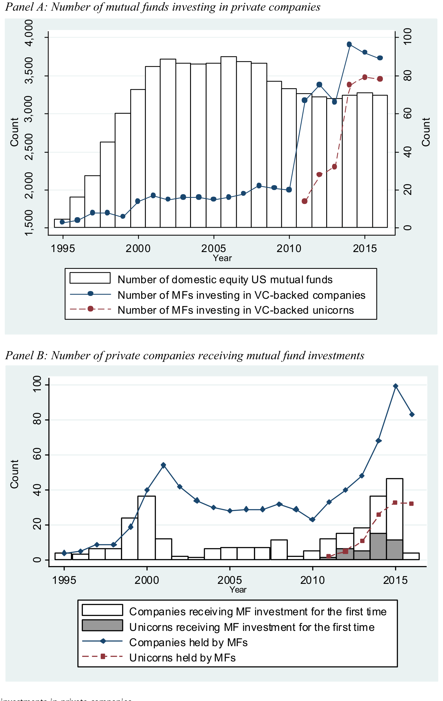
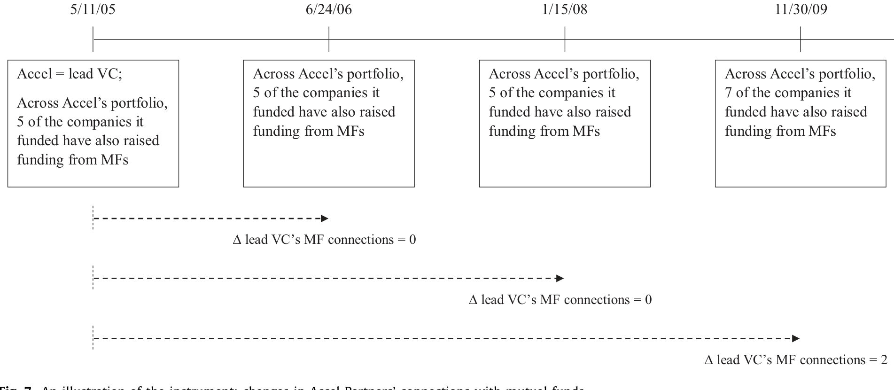
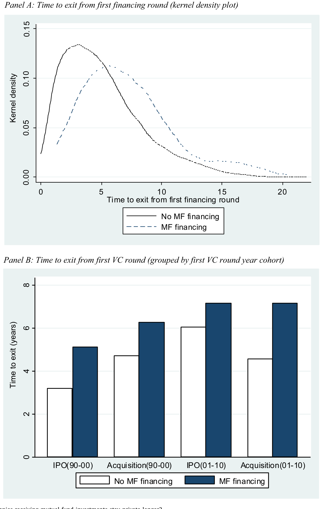
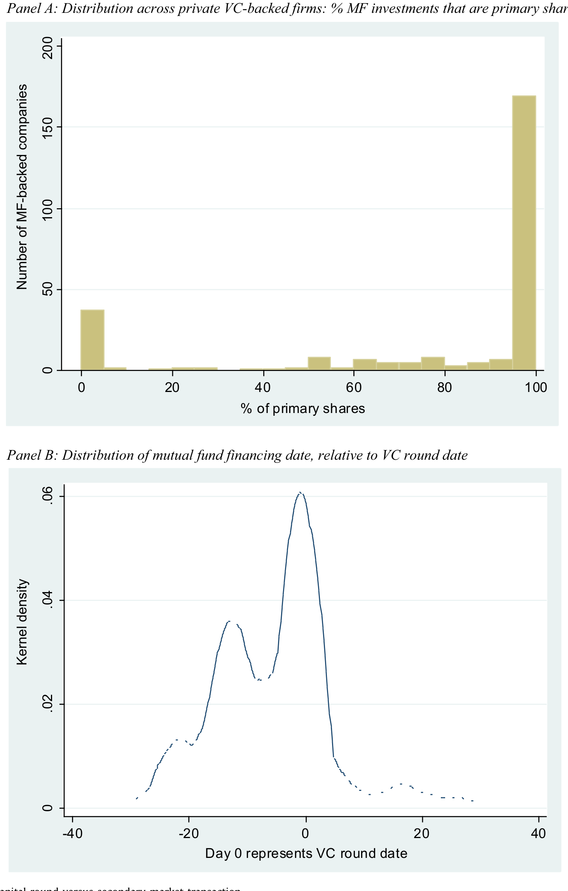
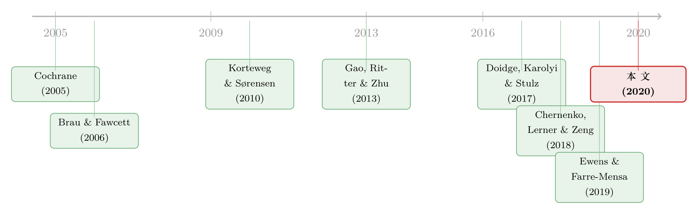

当「最公众」的投资者，悄悄走进了私募市场
本文读的是 Kwon, Lowry & Qian (2020, Journal of Financial Economics)：过去二十年，共同基金（mutual fund）——这个一向被视为「公众市场」代名词的投资者——大规模涌入了风险投资支持的私有公司。作者用一套基于「领投 VC 的基金人脉」的工具变量识别出，这笔钱真正做的事，是帮公司把上市这件事往后拖；与此同时，基金自己也从 IPO 退出与新股配售里赚到了实打实的超额回报。而广为流传的「傻钱抬估值」故事，证据并不支持。
1 一个本不该发生的相遇
先说一个几乎是教科书级别的常识：公司之所以要上市，最古老、最核心的理由，是为了拿到更广、更便宜的资本——把股份卖给一大群分散的股东。反过来，共同基金存在的意义，也写在它的名字里：它向千千万万散户每天敞开申购赎回，因此它天然只能持有流动性好、估值清楚的资产，也就是公开交易的股票和债券。
所以，私有公司和共同基金，本来该是两条永不相交的平行线。一个最不流动、最不透明、最难定价的资产类别，遇上一个被每日赎回压力拴住、被监管按着头要求估值的投资者——这听起来像是一桩谁都不愿意做的买卖。
可偏偏，过去二十年里，这两条线越缠越紧。
本文的三位作者——Kwon、Lowry 与 Qian——手工从 SEC 的 EDGAR 系统里，把 14 家基金家族、48 个 CIK、共 149 只基金在私有公司里的持仓一笔笔抠了出来，覆盖 1995–2016 年。他们看到的，是一组相当戏剧化的数字：1995 年到 2000 年间，每年投资私有公司的基金不到 15 只；到 2014 年，这个数字变成了 96 只。持有的私有公司数从 4 家涨到 99 家。而这些投资的总市值，从 1995 年的 $16 million，一路涨到 2015 年的 $8 billion 以上。

Figure 1: Mutual fund investments in private companies
更说明问题的是一个「渗透率」：在 1990 年代末，VC 支持的 IPO 里只有不到 10% 在上市前拿过共同基金的钱；到 2014–2016，这个比例升到了 25%。换句话说，2016 年那批 VC 支持的 IPO，有 39% 在上市前都有共同基金的身影。
于是一个自然的问题浮上来了：既然这桩买卖对基金这么「别扭」，它为什么还是发生了，而且越演越烈？是谁在推动它——是公司（需求方）想要这笔钱，还是基金（供给方）想要这笔买卖，抑或是中间的 VC 在借力打力？这正是全文要回答的核心。
2 三个互不排斥的故事
作者没有先入为主，而是把三种可能的驱动力摆上台面，逐一审问。
第一个，是需求侧的故事。 公司越来越想「晚点上市」。晚上市的好处是，可以先把规模做大——Gao et al. (2013) 早就指出，在规模经济日益重要的今天，「先长大再上市」尤其划算；同时还能推迟上市带来的种种成本：监管负担、信息披露削弱竞争优势、以及来自公众投资者对短期业绩的压力。而要晚上市，就得有人在私募阶段持续供血。Chernenko et al. (2018) 发现，共同基金恰好是一个理想的资金来源——它们通常不索要强势的控制权，而且不像 VC 那样有「到期必须退出」的封闭式基金结构。
第二个，是供给侧、站在基金角度的故事。 公开市场上「可投的好东西」变少了——上市公司数量在下降（关于公开市场的萎缩与它对宏观的含义，可参见《当失业率与纳斯达克背道而驰：股市还能代表经济吗？》）。主动型基金又被指数基金和 ETF 用更低的费率逼到墙角，急需找到能做出超额收益、能和别人「拉开差距」的标的。私有公司提供了三样东西：更高的潜在回报、分散化收益，以及——这一点很关键——上市时拿到更多新股配售的筹码。考虑到新股上市首日动辄两位数的涨幅，机构为了博取配售而做的各种「投桃报李」，文献里早有记载（Reuter, 2006；Ritter and Zhang, 2007）。
第三个，是供给侧、但站在 VC 角度的故事。 这是个略带阴谋论色彩的版本：VC 把共同基金当成「傻钱（dumb money）」，引它们进来以更高的估值注资，从而坐实自己投资组合的高估值。VC 一般坐在董事会里、握有足够的控制权，确实有能力把基金这样的「外来户」请进特定的高估值轮次。
这三个故事并不互斥。作者的工作，就是用数据把每一个都过一遍，看谁站得住、谁站不住。
3 真正关键的一步：识别「晚上市」的因果
到这里，叙事的难点出现了。说「拿了基金钱的公司上市更晚」很容易，但这是因果吗？很可能不是——那些本来就打算晚上市、本来就需要大量资本的公司，恰恰是基金最愿意投的对象。选择性会把相关性伪装成因果。
要把因果从中剥出来，作者构造了一个相当巧妙的工具变量（instrumental variable, IV）。它的思想根植于「关系是信息的管道」这一脉络（Cohen et al., 2010；Engelberg et al., 2012）：一家公司能不能拿到共同基金的钱，很大程度上取决于它的领投 VC 跟基金圈「熟不熟」。
具体做法是：追踪领投 VC 自这家公司第一轮融资以来，通过它投的其他公司所积累起来的「基金人脉」的演变。这个变量同时刻画了两件事——领投 VC 与基金联系的强度，以及它愿不愿意和基金共同投资的开放程度。它的妙处在于：领投 VC 在「别的公司」里结下的基金缘分，与「这家公司」该不该晚上市，并没有直接关系（排他性约束），却能强力预测「这家公司」能否拿到基金的钱。

Figure 7: An illustration of the instrument: changes in Accel Partners’ connections with mutual funds
把这个工具变量塞进一整套 IV 回归，结论很干净：共同基金的融资，确实让公司在私募阶段待得更久了。这不是公司自选的结果，而是「钱来了」本身造成的。

Figure 8: Do companies receiving mutual fund investments stay private longer?
而且这笔钱的体量绝不是装点门面。在有基金参与的融资轮里，基金平均提供了整轮融资的 38%（中位数 32%，2011–2016），并且这笔钱是增量的——它叠加在 VC 的出资之上，而不是替代。也就是说，基金确确实实往这些公司里多注了一大笔本来不会有的资本，难怪它们能够更从容地推迟上市。
4 基金到底图什么：回报与配售
需求侧的故事立住了。那供给侧呢？基金费这么大劲，到底图什么？
答案的第一层，是回报。和 VC 一样，基金在私有公司上的回报，绝大部分来自那些最终通过 IPO 退出的标的。在样本期内，基金在「最终 IPO 退出」的那批投资上，平均每月赚到了 4.8%。作者还沿用 Korteweg and Sørensen (2010) 的方法，跑了市场模型与三因子（Fama-French）回归来估计 alpha，结论是这些投资能带来正的超额回报。
答案的第二层，是配售——这是公开市场投资者独有的、VC 拿不到的好处。数据显示，那些在上市前就投过某家公司的基金家族，在该公司 IPO 时拿到配售的概率是 64%，而没投过的只有 21%；不仅更容易拿到，拿到的份额也更大——平均配售规模是发行股数的 4.7%，对照组只有 2.4%。
把这些拼在一起做一个粗略的「回到信封背面」的测算（综合 IPO 退出概率、被收购退出概率、以及条件回报，包括 IPO 时更高的配售），作者得到一个财富相对值（wealth relative）为 1.7–2.6：也就是说，基金在私有公司上赚的钱，是同期等权市场指数的 1.7 到 2.6 倍。
那风险呢？这些投资当然比公开市场的同类更险，但作者发现这种风险主要是特质性的：单只私有公司投资的平均回报与等权指数的相关系数是不显著的 −4%。这意味着，它们甚至还顺带提供了分散化的好处。
5 那个最诱人的故事，反而落空了
讲到这里，三个故事已经有两个被证据支持。但真正体现这篇论文「克制」的，是它怎么处理第三个——「傻钱抬估值」。
这个故事最诱人，因为它最符合直觉里的「阴谋」。可作者的反驳逻辑极其朴素：同一轮融资里，所有投资者拿到的条款通常是一样的。如果某一轮真是 VC 拉来「傻钱」、用来粉饰高估值的，那么聪明的投资者（高质量 VC）就应该躲开它才对。
可数据偏偏相反——有基金参与的融资轮，反而更可能包含高质量的 VC。进一步，作者从三个角度审视估值：其一，看轮次层面的估值变化，没有证据表明有基金参与的轮次被高估；其二，看后续估值变化，没有证据表明基金参与之后的轮次估值涨得更慢（如果是被抬高的虚高估值，后面理应回落）；其三，用 Korteweg and Sørensen (2010) 的方法估 alpha，同样没有证据表明有基金参与的轮次回报更低。

Figure 5: Venture capital round versus secondary market transaction
这是全文我最欣赏的一处：作者手握一个最容易写成「劲爆标题」的假说，却老老实实地报告了「没有证据」。一个反方向的、被否证的故事，往往比一个被证实的故事更能说明作者的诚实。
作者还顺手堵上了一个替代解释：会不会是别的私募资金（PE、CVC）枯竭了，基金才趁虚而入？数据说不是——VC 融资和 PE、CVC 等其他私募资本，几乎是和基金资金同时增长的。基金不是来「补缺口」的，它是这股大潮里的新成员。
6 文献脉络
把这篇论文放回它生长的土壤里看，它其实同时接通了三条河流。
第一条，是「上市的好处与代价」之争。 早期工作记录了上市的种种收益（Brau and Fawcett, 2006；Brav, 2009；Gilje and Taillard, 2016）与代价（Iliev, 2010；Asker et al., 2015）。本文的贡献在于指出：这本账正在系统性地被改写——资本、流动性、分散化的股东基础，这些过去只有上市才有的东西，如今在私募阶段就能拿到。公司选择晚上市，是一种「显示性偏好」，说明它们认为晚上市的净收益增加了。
第二条，是「IPO 市场的变迁」。 Gao et al. (2013) 指出私有公司越来越倾向于被并购而非上市；Doidge et al. (2017) 关注上市地点的选择；Ewens and Farre-Mensa (2019) 把美国 IPO 数量的下降归因于私募资本供给的增加（主要源于监管放松）。本文补上了一块新拼图：私募资本的增量里，有一部分来自共同基金这种「非典型」的私募投资者。
第三条，也是最近的一条，是「公众市场玩家进入私募世界」。 与本文最接近的是 Chernenko et al. (2018)，但他们聚焦独角兽的公司治理特征，结论偏向基金的「能力不足」。本文则走得更宽——更长的样本、更广的公司（强调多数拿到基金投资的其实是非独角兽），既看需求侧也看供给侧，还把目光投向了基金从中得到的正面收益（回报与配售）。关于 VC 一侧如何看待公众资金的进入，还有一个有意思的镜像视角，可参见《把名字从名单上划掉：当「透明」成了顶级 VC 拒绝公募资金的理由》。

7 评论与延伸（Q&A + 研究方向）
(a) 几个可能的疑问
Q：这个工具变量真的「外生」吗？领投 VC 的人脉广，会不会本身就意味着它投的公司更好？
这是最该担心的地方。作者的设计是用领投 VC 在其他组合公司里随时间积累的基金联系，而非这家公司本身的特征，从而把「公司质量」这一条直接渠道挡在外面。但排他性约束仍是不可检验的信念——如果「人脉广的 VC」恰好也「更会挑能晚上市的公司」，工具就会被污染。我认为方向上可信，但属于「讲得通」而非「铁证」。
Q：只有 14 个基金家族、149 只基金，样本会不会太小、不具代表性？
这是数据可得性的硬约束——私有持仓必须从
EDGAR的 N-30D / N-Q 表里一份份手工抠。但作者论证过：愿意投私有公司的，本来就高度集中在最大的基金家族（72 个 CIK 里有 68 个落在规模最大的第 10 分位）。所以「小样本」在这里更接近「几乎是总体」，而非随机抽样的小子集。
Q：4.8% 的月回报听上去高得离谱，可信吗？
它衡量的是条件于 IPO 退出的那部分投资，本身就是赢家偏误最重的子集，所以高是预期之内。真正有信息量的是那个
1.7–2.6的财富相对值，因为它已经把 IPO 概率、被收购概率和失败都加权进去了。即便如此，私募回报的估计对「失败样本如何处理」极其敏感，这类数字看趋势即可，不宜当成精确点估计。
Q：「同一轮条款相同，所以聪明钱不会和傻钱同投」这个逻辑站得住吗？
大体站得住，但有缝隙。现实中同一轮里不同投资者可能拿到不同的优先清算权、反稀释条款，账面「估值」相同不等于经济条款相同（这正是 Gornall and Strebulaev (2019) 的核心关切）。作者用的是报告估值，无法完全排除「条款层面的傻钱」。不过对「估值是否虚高」这个问题，他们的后续估值变化检验提供了独立佐证。
Q：基金给了平均 38% 的轮次资本，可个体投资者真能借此「沾光」私募市场吗？
几乎沾不上。作者明确指出，受监管限制与流动性顾虑，很少有基金把超过净资产 2% 的钱投入私有公司。所以对持有这些基金的散户而言，私募敞口被稀释得微乎其微。这也把球踢给了监管：保护散户远离一个他们看不懂的高风险资产，与限制他们接触一个越来越大的市场，孰轻孰重？
Q：这和「机构投资者参与 IPO」的老文献有什么本质区别？
老文献（Reuter, 2006 等）讲的是机构在上市那一刻如何博取配售。本文把时间轴往前推了好几年——机构在公司还是私有时就进场了，于是「上市前的私募投资」与「上市时的配售」被串成了一条因果链：早投不仅本身赚钱，还显著抬高了日后拿到配售的概率（64% vs 21%）。
(b) 几个可能的研究问题与提案
1. 共同基金私募持仓的「流动性传染」
【经济故事】基金把不流动的私有股权塞进一个每日可赎回的壳里，天然制造了流动性错配。一旦赎回潮来袭，基金是先甩卖流动的公开持仓、还是被迫给私有持仓打折估值？这与公司债基金的「脆弱性」文献高度同构。 【可行性】中。
EDGAR私募持仓 + CRSP 基金流数据可得；识别可借助赎回冲击（如同门基金的资金流）。难点在私有持仓的估值频率太低，事件窗口不好对齐。
2. 把镜头从股权移到「私募信用」
【经济故事】本文讲的是基金买私有公司的股权。但近年共同基金、BDC 也大举进入私募信贷（direct lending）。同样的三个故事——晚上市的资本需求、基金的收益饥渴、中介的「傻钱」叙事——在债权一侧是否成立？债权的条款（covenant、抵押）比股权清楚得多，正好能检验「条款层面的傻钱」。 【可行性】中高。可结合 BDC 的逐笔持仓披露与私募信贷数据库；识别上同样可借鉴「中介人脉」工具。这是公司债/信用市场方向上一个自然的延伸。
3. 私有持仓如何影响基金的「公开市场」业绩与行为
【经济故事】持有私有公司的基金经理，会不会在该公司 IPO 后、或在同行业公开股票上，表现出信息优势或行为偏差（如惜售、护盘）？私募人脉是否外溢成公开市场的 alpha？ 【可行性】高。基金公开持仓与交易可从 13F / N-PORT 重建，私募持仓已由本文方法给出，二者可直接对接。
4. 监管阈值作为断点：2% 净值上限的真实约束力
【经济故事】SEC 对基金持有不流动证券有比例限制。这个阈值是否真的「咬住」了基金的私募投资决策？逼近上限的基金，是否会放慢私募加仓、或转向更易脱手的二级份额？ 【可行性】中。需要基金层面的净值与私募持仓占比时间序列；识别可用「逼近上限」作为准断点，但内生的投资组合再平衡会污染断点的干净度。
5. 公司视角：拿了基金钱，上市后表现如何？
【经济故事】本文证明基金钱让公司晚上市。那么晚上市、且由基金供血的公司，最终 IPO 的定价、抑价、长期回报是否系统性不同？「晚上市」究竟是让公司更成熟，还是只是把估值泡沫推迟引爆？ 【可行性】高。SDC New Issues + 本文样本可直接匹配 IPO 结果；与双层股权 IPO 的回潮（见《founders 把控制权写进了招股书》）也有交叉验证的空间。
8 我的判断
这篇论文最大的贡献，不在某一个惊人的系数，而在它把一个被零散感知的现象——「连共同基金都开始投私有公司了」——变成了一组可核验的事实，并诚实地分解出它背后的多重动因。它的克制尤其值得称道：手握「傻钱抬估值」这个最易出彩的假说，作者却三度检验、三度报告「没有证据」，反而把高质量 VC 与基金同投的证据摆在台面上。
对识别，我的主要保留意见集中在那个工具变量。「领投 VC 的他处人脉」是个聪明的构造，但排他性约束终究无法直接检验——人脉广的 VC 与「擅长挑选能晚上市的公司」之间，很难说完全正交。结论的方向我信，但「因果」二字的分量，比文字给人的印象要再轻一档。
后续我最想看到的，是把这条线索接到信用市场与公司上市后的真实结果上：一是私募信贷里同样的三方博弈是否成立、条款数据能否一举检验「傻钱」假说；二是「被基金喂大、被推迟上市」的公司，IPO 之后到底是更健康还是更脆弱。把「晚上市」从一个中间结果，追到它最终的经济后果，这条故事才算讲完。
参考文献
- Asker, J., Farre-Mensa, J., Ljungqvist, A. (2015). Corporate investment and stock market listing: a puzzle? Review of Financial Studies 28, 342–390.
- Brau, J., Fawcett, S. (2006). Initial public offerings: an analysis of theory and practice. Journal of Finance 61, 399–436.
- Brav, O. (2009). Access to capital, capital structure, and the funding of the firm. Journal of Finance 64, 263–308.
- Chernenko, S., Lerner, J., Zeng, Y. (2018). Mutual Funds as Venture Capitalists? Evidence from Unicorns. Harvard Business School working paper.
- Cochrane, J. (2005). The risk and return of venture capital. Journal of Financial Economics 75, 3–52.
- Cohen, L., Frazzini, A., Malloy, C. (2010). Sell-side school ties. Journal of Finance 65, 1409–1437.
- Doidge, C., Karolyi, G.A., Stulz, R. (2017). The US listing gap. Journal of Financial Economics 123, 464–487.
- Engelberg, J., Gao, P., Parsons, C.A. (2012). Friends with money. Journal of Financial Economics 103, 169–188.
- Ewens, M., Farre-Mensa, J. (2019). The Deregulation of the Private Equity Market and the Decline in IPOs. Working paper.
- Gao, X., Ritter, J., Zhu, Z. (2013). Where have all the IPOs gone? Journal of Financial and Quantitative Analysis 48, 1663–1692.
- Gilje, E., Taillard, J. (2016). Do private firms invest differently than public firms? Journal of Finance 71, 1733–1778.
- Gornall, W., Strebulaev, I. (2019). Squaring venture capital valuations with reality. Journal of Financial Economics, in press.
- Iliev, P. (2010). The effect of SOX section 404: costs, earnings quality, and stock prices. Journal of Finance 65, 1163–1196.
- Korteweg, A., Sørensen, M. (2010). Risk and return characteristics of venture capital-backed entrepreneurial companies. Review of Financial Studies 23, 3738–3772.
- Kwon, S., Lowry, M., Qian, Y. (2020). Mutual fund investments in private firms. Journal of Financial Economics 136(2), 407–443.
- Reuter, J. (2006). Are IPO allocations for sale? Evidence from mutual funds. Journal of Finance 61, 2289–2324.
- Ritter, J., Zhang, D. (2007). Affiliated mutual funds and the allocation of initial public offerings. Journal of Financial Economics 86, 337–368.